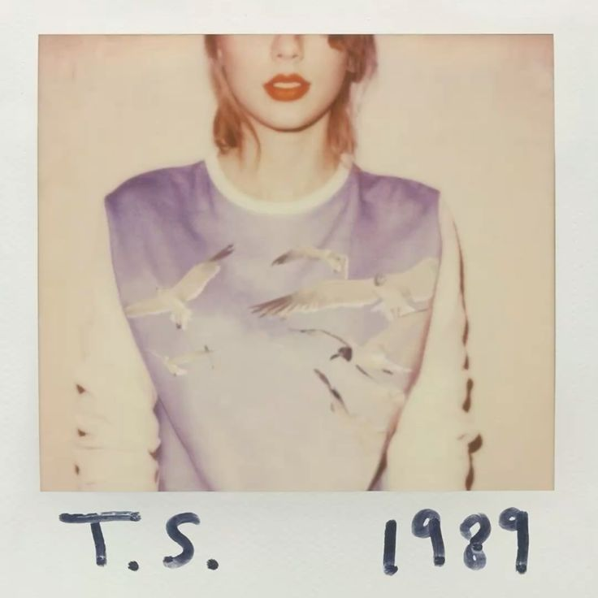

1989 é o quinto álbum de estúdio da Taylor Swift, lançado em 2014. O álbum marcou uma grande mudança em sua carreira, representando sua transição definitiva do country para o pop. Inspirado pela música dos anos 1980, o projeto trouxe uma sonoridade moderna, repleta de sintetizadores, refrões marcantes e produções sofisticadas que ajudaram a definir o pop da década. Entre os maiores sucessos do álbum estão "Shake It Off", "Blank Space", "Style", "Bad Blood" e "Wildest Dreams", músicas que conquistaram o público e consolidaram Taylor Swift como uma das maiores artistas do cenário musical mundial. As canções exploram temas como amor, autodescoberta, liberdade, fama e crescimento pessoal, sempre acompanhados por letras inteligentes e emocionantes. Minha música favorita do álbum é "You're In Love", uma das faixas mais delicadas e emocionantes da edição deluxe. Diferente dos grandes hits dançantes de 1989, a canção apresenta uma atmosfera suave e intimista, descrevendo os pequenos momentos que revelam quando duas pessoas estão verdadeiramente apaixonadas. Sua letra sensível e sua melodia tranquila fazem dela uma das músicas mais especiais e tocantes de toda a era 1989. Além do enorme sucesso comercial, 1989 recebeu diversos prêmios importantes, incluindo o Álbum do Ano no Grammy Awards. O projeto é considerado um dos álbuns pop mais influentes dos anos 2010 e continua sendo uma das obras mais icônicas da carreira de Taylor Swift, graças à sua produção inovadora, suas músicas inesquecíveis e seu impacto duradouro na indústria musical.

Bem-vinda a Nova Iorque Welcome To New York Caminhando em meio a uma multidão, a cidade está brilhando Walking through a crowd, the village is aglow Caleidoscópio de batimentos cardíacos altos debaixo dos casacos Kaleidoscope of loud heartbeats under coats Todo mundo aqui queria algo mais Everybody here wanted something more Procurando por um som que não ouvimos antes Searching for a sound we hadn't heard before E ela diz And it said Bem-vinda a Nova Iorque Welcome to New York Ela esteve esperando por você It's been waiting for you Bem-vinda a Nova Iorque Welcome to New York Bem-vinda a Nova Iorque Welcome to New York Bem-vinda a Nova Iorque Welcome to New York Ela esteve esperando por você It's been waiting for you Bem-vinda a Nova Iorque Welcome to New York Bem-vinda a Nova Iorque Welcome to New York É uma nova trilha sonora, eu poderia dançar ao som dessa batida, batida It's a new soundtrack, I could dance to this beat, beat Para sempre Forever more As luzes são tão fortes, mas nunca me cegam, me cegam The lights are so bright, but they never blind me, me Bem-vinda a Nova Iorque Welcome to New York Ela esteve esperando por você It's been waiting for you Bem-vinda a Nova Iorque Welcome to New York Bem-vinda a Nova Iorque Welcome to New York Quando deixamos nossas malas no chão do apartamento pela primeira vez When we first dropped our bags on apartment floors Pegamos nossos corações partidos, colocamos eles numa gaveta Took our broken hearts, put them in a drawer Todo mundo aqui era outra pessoa antes Everybody here was someone else before E você pode querer quem quiser And you can want who you want Garotos e garotos e garotas e garotas Boys and boys and girls and girls Bem-vinda a Nova Iorque Welcome to New York Ela esteve esperando por você It's been waiting for you Bem-vinda a Nova Iorque Welcome to New York Bem-vinda a Nova Iorque Welcome to New York Bem-vinda a Nova Iorque Welcome to New York Ela esteve esperando por você It's been waiting for you Bem-vinda a Nova Iorque Welcome to New York Bem-vinda a Nova Iorque Welcome to New York É uma nova trilha sonora, eu poderia dançar ao som dessa batida, batida It's a new soundtrack, I could dance to this beat, beat Para sempre Forever more As luzes são tão fortes, mas nunca me cegam, me cegam The lights are so bright, but they never blind me, me Bem-vinda a Nova Iorque (Nova Iorque) Welcome to New York (New York) Ela esteve esperando por você It's been waiting for you Bem-vinda a Nova Iorque Welcome to New York Bem-vinda a Nova Iorque Welcome to New York Como todo grande amor, ela mantém você na dúvida Like any great love, it keeps you guessing Como todo amor verdadeiro, ela está sempre mudando Like any real love, it's ever changing Como todo amor de verdade, ela te enlouquece Like any true love, it drives you crazy Mas você sabe que não mudaria nada, nada, nada But you know you wouldn't change anything, anything, anything Bem-vinda a Nova Iorque Welcome to New York Ela esteve esperando por você It's been waiting for you Bem-vinda a Nova Iorque Welcome to New York Bem-vinda a Nova Iorque Welcome to New York Bem-vinda a Nova Iorque Welcome to New York Ela esteve esperando por você It's been waiting for you Bem-vinda a Nova Iorque Welcome to New York Bem-vinda a Nova Iorque Welcome to New York É uma nova trilha sonora, eu poderia dançar ao som dessa batida, batida It's a new soundtrack, I could dance to this beat As luzes são tão fortes, mas nunca me cegam, me cegam (bem-vinda a Nova Iorque) The lights are so bright, but they never blind me (welcome to New York) Nova trilha sonora (ela esteve esperando por você) New soundtrack (it's been waiting for you) (Bem-vinda a Nova Iorque) as luzes são tão fortes, mas nunca me cegam (Welcome to New York) the lights are so bright, but they never blind me (Bem-vinda a Nova Iorque) tão fortes, nunca me cegam (Welcome to New York) so bright, they never blind me (Bem-vinda a Nova Iorque) (Welcome to New York) Bem-vinda a Nova Iorque Welcome to New York
Espaço Em Branco Blank Space Prazer em te conhecer, onde você esteve? Nice to meet you, where you been? Eu posso te mostrar coisas incríveis I could show you incredible things Magia, loucura, paraíso, pecado Magic, madness, heaven, sin Te vi ali, e eu pensei Saw you there and I thought Ai, meu Deus, olhe esse rosto! Oh, my God, look at that face! Você parece com o meu próximo erro You look like my next mistake O amor é um jogo, quer jogar? Love's a game, wanna play? O novo rico, de terno e gravata New money, suit and tie Eu posso te ler como uma revista I can read you like a magazine Não é engraçado? Os boatos voam Ain't it funny? Rumors fly E eu sei que você já ouviu falar de mim And I know you heard about me Então, ei, vamos ser amigos So hey, let's be friends Estou louca para ver como isso vai acabar I'm dying to see how this one ends Pegue seu passaporte e a minha mão Grab your passport and my hand Eu posso fazer os caras maus ficarem bonzinhos por um final de semana I can make the bad guys good for a weekend Então, vai ser para sempre So it's gonna be forever Ou vai acabar em chamas? Or it's gonna go down in flames? Você pode me dizer quando for o fim You can tell me when it's over Se os momentos bons superaram a dor If the high was worth the pain Tenho uma longa lista de ex-namorados Got a long list of ex-lovers Eles te dirão que sou maluca They'll tell you I'm insane Porque você sabe que eu adoro os jogadores 'Cause you know I love the players E você ama o jogo And you love the game Pois somos jovens e imprudentes 'Cause we're young and we're reckless Vamos passar dos limites We'll take this way too far Vai te deixar sem fôlego It'll leave you breathless Ou com uma cicatriz horrível Or with a nasty scar Tenho uma longa lista de ex-namorados Got a long list of ex-lovers Eles te dirão que sou maluca They'll tell you I'm insane Mas eu tenho um espaço em branco, querido But I've got a blank space, baby E vou escrever seu nome And I'll write your name Lábios de cereja, céus de cristal Cherry lips, crystal skies Eu poderia te mostrar coisas incríveis I could show you incredible things Beijos roubados, mentirinhas Stolen kisses, pretty lies Você é o rei, querido, sou sua rainha You're the King, baby, I'm your Queen Vou descobrir o que você quer Find out what you want Ser essa garota por um mês Be that girl for a month Espere, o pior ainda está por vir, oh não Wait, the worst is yet to come, oh no Gritando, chorando, uma série de contratempos Screaming, crying, perfect storms Eu posso fazer o jogo virar I can make all the tables turn Um jardim de rosas cheias de espinhos Rose garden filled with thorns Você vai ficar se questionando, tipo Keep you second guessing like Ai, meu Deus, quem é ela? Oh, my God, who is she? Eu fico louca de ciúmes I get drunk on jealousy Mas você voltará todas as vezes que fugir But you'll come back each time you leave Porque, querido, eu sou um pesadelo vestido de sonho 'Cause, darling, I'm a nightmare dressed like a daydream Então, vai ser para sempre So it's gonna be forever Ou vai acabar em chamas? Or it's gonna go down in flames? Você pode me dizer quando for o fim You can tell me when it's over Se os momentos bons superaram a dor If the high was worth the pain Tenho uma longa lista de ex-namorados Got a long list of ex-lovers Eles te dirão que sou maluca They'll tell you I'm insane Porque você sabe que eu adoro os jogadores 'Cause you know I love the players E você ama o jogo And you love the game Pois somos jovens e imprudentes 'Cause we're young and we're reckless Vamos passar dos limites We'll take this way too far Vai te deixar sem fôlego It'll leave you breathless Ou com uma cicatriz horrível Or with a nasty scar Tenho uma longa lista de ex-namorados Got a long list of ex-lovers Eles te dirão que sou maluca They'll tell you I'm insane Mas eu tenho um espaço em branco, querido But I've got a blank space, baby E vou escrever seu nome And I'll write your name Garotos só querem amor se tiver tortura Boys only want love if it's torture Não diga que eu não disse, que eu não te avisei Don't say I didn't say, I didn't warn ya Garotos só querem amor se tiver tortura Boys only want love if it's torture Não diga que eu não disse, que eu não te avisei Don't say I didn't say, I didn't warn ya Então, vai ser para sempre So it's gonna be forever Ou vai acabar em chamas? Or it's gonna go down in flames? Você pode me dizer quando for o fim You can tell me when it's over Se os momentos bons superaram a dor If the high was worth the pain Tenho uma longa lista de ex-namorados Got a long list of ex-lovers Eles te dirão que sou maluca They'll tell you I'm insane Porque você sabe que eu adoro os jogadores 'Cause you know I love the players E você ama o jogo And you love the game Pois somos jovens e imprudentes 'Cause we're young and we're reckless Vamos passar dos limites We'll take this way too far Vai te deixar sem fôlego It'll leave you breathless Ou com uma cicatriz horrível Or with a nasty scar Tenho uma longa lista de ex-namorados Got a long list of ex-lovers Eles te dirão que sou maluca They'll tell you I'm insane Mas eu tenho um espaço em branco, querido But I've got a blank space, baby E vou escrever seu nome And I'll write your name
Estilo Style Meia-noite Midnight Você vem me buscar, faróis apagados You come and pick me up, no headlights Uma viagem longa A long drive Poderia acabar em chamas ou no paraíso Could end in burning flames or paradise Entra em cena, oh Fade into view, oh Já faz um tempo desde que ouvi falar de você It's been a while since I have even heard from you (Ouvi falar de você) (Heard from you) E eu devia apenas te dizer para ir embora, porque eu And I should just tell you to leave, 'cause I Sei exatamente onde isso leva, mas eu Know exactly where it leads, but I Fico vendo a gente dar voltas e voltas toda vez Watch us go 'round and 'round each time Você tem aquele olhar sonhador de James Dean em seus olhos You got that James Dean daydream look in your eye E estou com aqueles lábios vermelhos, o clássico que você adora And I got that red lip, classic thing that you like E quando nós terminamos, voltamos todas as vezes And when we go crashing down, we come back every time Porque nós nunca saímos de moda 'Cause we never go out of style Nós nunca saímos de moda We never go out of style Você tem aquele cabelo comprido, penteado para trás, camiseta branca You got that long hair, slicked back, white t-shirt E eu tenho aquela fé de boa garota, e uma saia pequena e apertada And I got that good girl faith and a tight little skirt E quando nós terminamos, voltamos todas as vezes And when we go crashing down, we come back every time Porque nós nunca saímos de moda 'Cause we never go out of style Nós nunca saímos de moda We never go out of style Então assim vai So it goes Ele não consegue manter seus olhos selvagens na estrada He can't keep his wild eyes on the road Me leva para casa Takes me home As luzes estão apagadas, ele está tirando o seu casaco The lights are off, he's taking off his coat Eu digo: Eu ouvi, oh I say: I heard, oh Que você estava por aí com alguma outra garota That you've been out and about with some other girl (Alguma outra garota) (Some other girl) Ele diz: O que você ouviu é verdade, mas eu He says: What you heard is true, but I Não consigo parar de pensar em você, e eu Can't stop thinking about you, and I Eu disse: Eu já passei por isso algumas vezes I said: I've been there too, a few times Você tem aquele olhar sonhador de James Dean em seus olhos 'Cause you got that James Dean daydream look in your eye E estou com aqueles lábios vermelhos, o clássico que você adora And I got that red lip, classic thing that you like E quando nós terminamos, voltamos todas as vezes And when we go crashing down, we come back every time Porque nós nunca saímos de moda 'Cause we never go out of style Nós nunca saímos de moda We never go out of style Você tem aquele cabelo comprido penteado para trás, camiseta branca You got that long hair, slicked back, white t-shirt E eu tenho aquela fé de boa garota, e uma saia pequena e apertada (uma saia pequena e apertada) And I got that good girl faith and a tight little skirt (a tight little skirt) E quando nós terminamos, voltamos todas as vezes And when we go crashing down, we come back every time Porque nós nunca saímos de moda (nunca saímos, nunca saímos) 'Cause we never go out of style (we never go, we never go) Nós nunca saímos de moda We never go out of style Me leve para casa Take me home Apenas me leve para casa Just take me home Sim, apenas me leve para casa Yeah, just take me home Oh, oh, oh Oh, oh, oh (Saímos de moda) (Out of style) Você tem aquele olhar sonhador de James Dean em seus olhos You got that James Dean daydream look in your eye E estou com aqueles lábios vermelhos, o clássico que você adora And I got that red lip, classic thing that you like E quando nós terminamos, voltamos todas as vezes (e quando nós) And when we go crashing down, we come back every time (and when we go) Porque nós nunca saímos de moda 'Cause we never go out of style Nós nunca saímos de moda We never go out of style
Out Of The Woods Taylor Swift Olhando agora Looking at it now Tudo parecia tão simples It all seems so simple Estávamos deitados no seu sofá We were lying on your couch Eu me lembro I remember Você tirou uma foto nossa You took a Polaroid of us E aí descobriu que (depois descobriu que) Then discovered (then discovered) O resto do mundo estava em preto e branco The rest of the world was black and white Mas nós tínhamos cores vívidas But we were in screaming color E eu me lembro de pensar And I remember thinking Já estamos fora de perigo? Já estamos fora de perigo? Are we out of the woods yet? Are we out of the woods yet? Já estamos fora de perigo? Estamos fora de perigo? Are we out of the woods yet? Are we out of the woods? Já estamos resolvidos? Já estamos resolvidos? Are we in the clear yet? Are we in the clear yet? Já estamos resolvidos? Estamos resolvidos? Ainda bem Are we in the clear yet? In the clear yet? Good Já estamos fora de perigo? Já estamos fora de perigo? Are we out of the woods yet? Are we out of the woods yet? Já estamos fora de perigo? Estamos fora de perigo? Are we out of the woods yet? Are we out of the woods? Já estamos resolvidos? Já estamos resolvidos? Are we in the clear yet? Are we in the clear yet? Já estamos resolvidos? Estamos resolvidos? Ainda bem Are we in the clear yet? In the clear yet? Good (Já estamos fora de perigo?) (Are we out of the woods?) Olhando agora Looking at it now Para dezembro passado (dezembro passado) Last December (last December) Nós fomos feitos para desmoronar We were built to fall apart Depois nos reconstruirmos de novo (reconstruirmos de novo) Then fall back together (back together) Ooh, seu cordão pendurado no meu pescoço Ooh, your necklace hanging from my neck A noite que não conseguíamos bem esquecer The night we couldn't quite forget Quando nós decidimos (nós decidimos) When we decided (we decided) Que iríamos tirar os móveis do caminho para podermos dançar To move the furniture so we could dance Amor, como se tivéssemos alguma chance Baby, like we stood a chance Dois aviões de papel voando, voando, voando Two paper airplanes flying, flying, flying E eu me lembro de pensar And I remember thinking Já estamos fora de perigo? Já estamos fora de perigo? Are we out of the woods yet? Are we out of the woods yet? Já estamos fora de perigo? Estamos fora de perigo? Are we out of the woods yet? Are we out of the woods? Já estamos resolvidos? Já estamos resolvidos? Are we in the clear yet? Are we in the clear yet? Já estamos resolvidos? Estamos resolvidos? Ainda bem Are we in the clear yet? In the clear yet? Good Já estamos fora de perigo? Já estamos fora de perigo? Are we out of the woods yet? Are we out of the woods yet? Já estamos fora de perigo? Estamos fora de perigo? Are we out of the woods yet? (Oh) are we out of the woods? Já estamos resolvidos? Já estamos resolvidos? Are we in the clear yet? Are we in the clear yet? Já estamos resolvidos? Estamos resolvidos? Ainda bem Are we in the clear yet? In the clear yet? Good (Já estamos fora de perigo?) (Are we out of the woods?) Lembra quando você pisou no freio antes da hora? Remember when you hit the brakes too soon? Vinte pontos no quarto do hospital Twenty stitches in the hospital room Quando você começou a chorar, amor, eu também chorei When you started crying, baby, I did too Mas quando o Sol nasceu, eu estava olhando para você But when the Sun came up, I was looking at you Lembra quando não conseguimos aguentar as críticas? Remember when we couldn't take the heat? Me afastei, eu disse: Estou te libertando I walked out, I said: I'm setting you free Mas os monstros, na verdade, eram apenas árvores But the monsters turned out to be just trees E quando o Sol nasceu, você estava olhando para mim When the Sun came up, you were looking at me Você estava olhando para mim, oh You were looking at me, oh Você estava olhando para mim (já estamos fora de perigo? Já estamos fora de perigo?) You were looking at me (are we out of the woods yet? Are we out of the woods yet?) (Já estamos fora de perigo? Estamos fora de perigo?) eu me lembro (Are we out of the woods yet? Are we out of the woods?) I remember (Já estamos resolvidos? Já estamos resolvidos?) (Are we in the clear yet? Are we in the clear yet?) (Já estamos resolvidos? Estamos resolvidos? Ainda bem) oh, eu me lembro (Are we in the clear yet? In the clear yet? Good) oh, I remember Já estamos fora de perigo? Já estamos fora de perigo? (sim, sim) Are we out of the woods yet? Are we out of the woods yet? (Yeah, yeah) Já estamos fora de perigo? Estamos fora de perigo? Are we out of the woods yet? Are we out of the woods? Já estamos resolvidos? Já estamos resolvidos? (diga, nós estamos?) Are we in the clear yet? Are we in the clear yet? (Say, are we?) Já estamos resolvidos? Estamos resolvidos? Ainda bem Are we in the clear yet? In the clear yet? Good Já estamos fora de perigo? Já estamos fora de perigo? Are we out of the woods yet? Are we out of the woods yet? Já estamos fora de perigo? Estamos fora de perigo? Are we out of the woods yet? Are we out of the woods? Já estamos resolvidos? Já estamos resolvidos? (sim) Are we in the clear yet? (Yeah) are we in the clear yet? (Yeah) Já estamos resolvidos? Estamos resolvidos? Ainda bem (já estamos resolvidos? Ainda bem) Are we in the clear yet? In the clear yet? Good (clear yet? Good) Já estamos fora de perigo? Já estamos fora de perigo? Are we out of the woods yet? Are we out of the woods yet? Já estamos fora de perigo? Estamos fora de perigo? Are we out of the woods yet? Are we out of the woods? Já estamos resolvidos? Já estamos resolvidos? Are we in the clear yet? Are we in the clear yet? Já estamos resolvidos? Estamos resolvidos? Ainda bem (você se lembra) Are we in the clear yet? In the clear yet? Good (do you remember?) Já estamos fora de perigo? Já estamos fora de perigo? Are we out of the woods yet? Are we out of the woods yet? Já estamos fora de perigo? Estamos fora de perigo? Are we out of the woods yet? Are we out of the woods? Já estamos resolvidos? Já estamos resolvidos? Are we in the clear yet? Are we in the clear yet? Já estamos resolvidos? Estamos resolvidos? Ainda bem Are we in the clear yet? In the clear yet? Good
Tudo Que Você Tinha Que Fazer Era Ficar All You Had To Do Was Stay (Ei, ei, ei) (Hey, hey, hey) (Ei, ei, ei) (Hey, hey, hey) (Ei, ei, ei) (Hey, hey, hey) (Ei, ei, ei) (Hey, hey, hey) Pessoas como você sempre querem de volta People like you always want back O amor que elas desprezaram The love they gave away E pessoas como eu querem acreditar em você And people like me wanna believe you Quando você diz que mudou When you say you've changed Quanto mais penso nisso agora The more I think about it now Menos eu sei The less I know Tudo que sei é que você nos tirou All I know is that you drove us Da estrada Off the road (Ficar) ei, tudo que você tinha que fazer era ficar (Stay) hey, all you had to do was stay Me tinha na palma da sua mão, então Had me in the palm of your hand, then Por que você teve que ir e me trancar para fora quando te deixei entrar? Why'd you have to go and lock me out when I let you in? (Ficar) ei, agora você diz que quer de volta (Stay) hey, now you say you want it back Agora que é tarde demais Now that it's just too late Bem, poderia ter sido fácil Well, could've been easy Tudo que você tinha que fazer era (ficar) All you had to do was (stay) Tudo que você tinha que fazer era (ficar) All you had to do was (stay) Tudo que você tinha que fazer era (ficar) All you had to do was (stay) Tudo que você tinha que fazer era (ficar) All you had to do was (stay) Tudo que você tinha que fazer era ficar All you had to do was stay Aqui está você agora, me ligando Here you are now, calling me up Mas não sei o que dizer But I don't know what to say Eu tenho recolhido as peças I've been picking up the pieces Da bagunça do que você fez Of the mess you made Pessoas como você sempre querem de volta People like you always want back O amor que elas afastaram The love they pushed aside Mas pessoas como eu se vão para sempre But people like me are gone forever Quando você diz: Adeus When you say: Goodbye (Ficar) ei, tudo que você tinha que fazer era ficar (Stay) hey, all you had to do was stay Me tinha na palma da sua mão, então Had me in the palm of your hand, then Por que você teve que ir e me trancar para fora quando te deixei entrar? Why'd you have to go and lock me out when I let you in? (Ficar) ei, agora você diz que quer de volta (Stay) hey, now you say you want it back Agora que é tarde demais Now that it's just too late Bem, poderia ter sido fácil Well, could've been easy Tudo que você tinha que fazer era (ficar) All you had to do was (stay) Tudo que você tinha que fazer era (ficar) All you had to do was (stay) Tudo que você tinha que fazer era (ficar) All you had to do was (stay) Tudo que você tinha que fazer era (ficar, ficar, ficar) All you had to do was (stay, stay, stay) Deixa eu te lembrar: Foi isso que você quis (oh-oh-oh) Let me remind you: This was what you wanted (oh-oh-oh) Você terminou You ended it Você era tudo que eu queria (oh-oh-oh) You were all I wanted (oh-oh-oh) Mas não assim But not like this Não assim Not like this Não assim Not like this Oh, tudo que você tinha que fazer era Oh, all you had to do was (Ficar) ei, tudo que você tinha que fazer era ficar (Stay) hey, all you had to do was stay Me tinha na palma da sua mão, então Had me in the palm of your hand, then Por que você teve que ir e me trancar para fora quando te deixei entrar? Why'd you have to go and lock me out when I let you in? (Ficar) ei, agora você diz que quer de volta (Stay) hey, now you say you want it back Agora que é tarde demais Now that it's just too late Bem, poderia ter sido fácil Well, could've been easy Tudo que você tinha que fazer era All you had to do was (Ficar) ei, tudo que você tinha que fazer era ficar (Stay) hey, all you had to do was stay Me tinha na palma da sua mão, então Had me in the palm of your hand, then Por que você teve que ir e me trancar para fora quando te deixei entrar? Why'd you have to go and lock me out when I let you in? (Ficar) ei, agora você diz que quer de volta (Stay) hey, now you say you want it back Agora que é tarde demais Now that it's just too late Bem, poderia ter sido fácil (tudo que você tinha que fazer era ficar) Well, it could've been easy (all you had to do was stay) Tudo que você tinha que fazer era (ficar) All you had to do was (stay) Tudo que você tinha que fazer era (ficar), oh All you had to do was (stay), oh Tudo que você tinha que fazer era (ficar) All you had to do was (stay) Tudo que você tinha que fazer era (ficar), ooh All you had to do was (stay), ooh Tudo que você tinha que fazer era (ficar) All you had to do was (stay)
Shake It Off Taylor Swift Eu fico fora até tarde I stay out too late Não tenho nada na minha cabeça Got nothing in my brain É isso que as pessoas dizem, hum, hum That's what people say, hm, hm É isso que as pessoas dizem, hum, hum That's what people say, hm, hm Eu vou em muitos encontros I go on too many dates Mas não consigo fazer eles ficarem But I can't make them stay Pelo menos é isso que as pessoas dizem, hum, hum At least that's what people say, hm, hm É isso que as pessoas dizem, hum, hum That's what people say, hm, hm Mas eu continuo seguindo em frente But I keep cruising Não posso parar, não vou parar de me mexer Can't stop, won't stop moving É como se tivesse uma música It's like I got this music Na minha mente, dizendo que tudo vai ficar bem In my mind, saying it's gonna be alright Porque os paqueradores vão paquerar (paquerar, paquerar, paquerar, paquerar) 'Cause the players gonna play (play, play, play, play) E os invejosos vão invejar (invejar, invejar, invejar, invejar) And the haters gonna hate (hate, hate, hate, hate) Amor, eu só vou deixar (deixar, deixar, deixar, deixar) Baby, I'm just gonna shake (shake, shake, shake, shake) Eu deixo pra lá, eu deixo pra lá I shake it off, I shake it off Mulherengos vão iludir (iludir, iludir, iludir, iludir) Heartbreakers gonna break (break, break, break, break) E os falsos vão fingir (fingir, fingir, fingir, fingir) And the fakers gonna fake (fake, fake, fake, fake) Amor, eu só vou deixar (deixar, deixar, deixar, deixar) Baby, I'm just gonna shake (shake, shake, shake, shake) Eu deixo pra lá, eu deixo pra lá I shake it off, I shake it off Eu nunca perco uma batida I never miss a beat Eu tenho eletricidade nos meus pés I'm lightning on my feet E é isso que eles não conseguem ver, hum, hum And that's what they don't see, hm, hm É isso que eles não conseguem ver, hum, hum That's what they don't see, hm, hm Estou dançando sozinha (dançando sozinha) I'm dancing on my own (dancing on my own) Eu invento os passos enquanto danço (passos enquanto danço) I make the moves up as I go (moves up as I go) E é isso que eles não sabem, hum, hum And that's what they don't know, hm, hm É isso que eles não sabem, hum, hum That's what they don't know, hm, hm Mas eu continuo seguindo em frente But I keep cruising Não posso parar, não vou parar de dançar Can't stop, won't stop grooving É como se tivesse esta música It's like I got this music Na minha mente, dizendo que tudo vai ficar bem In my mind, saying it's gonna be alright Porque os paqueradores vão paquerar (paquerar, paquerar, paquerar, paquerar) 'Cause the players gonna play (play, play, play, play) E os invejosos vão invejar (invejar, invejar, invejar, invejar) And the haters gonna hate (hate, hate, hate, hate) Amor, eu só vou deixar (deixar, deixar, deixar, deixar) Baby, I'm just gonna shake (shake, shake, shake, shake) Eu deixo pra lá, eu deixo pra lá I shake it off, I shake it off Mulherengos vão iludir (iludir, iludir, iludir, iludir) Heartbreakers gonna break (break, break, break, break) E os falsos vão fingir (fingir, fingir, fingir, fingir) And the fakers gonna fake (fake, fake, fake, fake) Amor, eu só vou deixar (deixar, deixar, deixar, deixar) Baby, I'm just gonna shake (shake, shake, shake, shake) Eu deixo pra lá, eu deixo pra lá I shake it off, I shake it off Deixo pra lá, eu deixo pra lá Shake it off, I shake it off Eu, eu, eu deixo pra lá, eu deixo pra lá I, I, I shake it off, I shake it off Eu, eu, eu deixo pra lá, eu deixo pra lá I, I, I shake it off, I shake it off Eu, eu, eu deixo pra lá, eu deixo pra lá I, I, I shake it off, I shake it off Ei, ei, ei! Hey, hey, hey! Só pense que enquanto você esteve chateada e decepcionada por causa dos mentirosos Just think while you've been getting down and out about the liars E dos sujos, sujos trapaceiros do mundo And the dirty, dirty cheats of the world Você poderia estar se acabando nessa batida incrível You could've been getting down to this sick beat Meu ex trouxe sua nova namorada My ex-man brought his new girlfriend Ela está tipo: Ai, meu Deus And she's like: Oh my God Mas eu vou deixar pra lá But I'm just gonna shake E para o cara bem ali com o cabelo lindo And to the fella over there with the hella good hair Por que não vem pra cá, amor? Won't you come on over, baby? Nós poderíamos sacudir, sacudir, sacudir We can shake, shake, shake Sim, oh! Yeah, oh! Porque os paqueradores vão paquerar (paquerar, paquerar, paquerar, paquerar) 'Cause the players gonna play (play, play, play, play) E os invejosos vão invejar (invejar, invejar, invejar, invejar) And the haters gonna hate (hate, hate, hate, hate) (haters gonna hate) Amor, eu só vou deixar (deixar, deixar, deixar, deixar) Baby, I'm just gonna shake (shake, shake, shake, shake) Eu deixo pra lá, eu deixo pra lá I shake it off, I shake it off Mulherengos vão iludir (iludir, iludir, iludir, iludir) Heartbreakers gonna break (break, break, break, break) E os falsos vão fingir (fingir, fingir, fingir, fingir), amor And the fakers gonna fake (fake, fake, fake, fake) Amor, eu só vou deixar (deixar, deixar, deixar, deixar) Baby, I'm just gonna shake (shake, shake, shake, shake) Eu deixo pra lá, eu deixo pra lá I shake it off, I shake it off Deixo pra lá, deixo pra lá Shake it off, I shake it off Eu, eu, eu deixo pra lá, eu deixo pra lá I, I, I shake it off, I shake it off Eu, eu, eu deixo pra lá, eu deixo pra lá I, I, I shake it off, I shake it off Eu, eu, eu deixo pra lá, eu deixo pra lá (uh, uh, uh) I, I, I shake it off, I shake it off Deixo pra lá, deixo pra lá Shake it off, I shake it off Eu, eu, eu deixo pra lá, eu deixo pra lá I, I, I shake it off, I shake it off Eu, eu, eu deixo pra lá, eu deixo pra lá I, I, I shake it off, I shake it off Eu, eu, eu deixo pra lá, eu deixo pra lá I, I, I shake it off, I shake it off Deixo pra lá, deixo pra lá Shake it off, I shake it off Eu, eu, eu deixo pra lá, eu deixo pra lá (você tem que) I, I, I shake it off, I shake it off (you got to) Eu, eu, eu deixo pra lá, eu deixo pra lá I, I, I shake it off, I shake it off Eu, eu, eu deixo pra lá, eu deixo pra lá I, I, I shake it off, I shake it off
I Wish You Would Taylor Swift São duas da manhã It's 2 AM No seu carro In your car Janelas abaixadas, você passa a minha rua Windows down, you pass my street As memórias começam The memories start Você diz que está no passado You say it's in the past Você dirige em frente You drive straight ahead Você está achando que eu te odeio agora You're thinking that I hate you now Porque ainda não sabe o que eu nunca disse 'Cause you still don't know what I never said Eu gostaria que você voltasse I wish you would come back Gostaria de nunca ter desligado o telefone como fiz, eu Wish I never hung up the phone like I did, I Gostaria que você soubesse que Wish you knew that Eu nunca te esquecerei enquanto eu viver, e eu I'd never forget you as long as I live, and I Gostaria que você estivesse bem aqui, agora, está tudo bem Wish you were right here, right now, it's all good Eu gostaria que você estivesse I wish you would São duas da manhã It's 2 AM No meu quarto In my room Os faróis passam na vidraça da janela Headlights pass the window pane Eu penso em você I think of you Nós somos um amor tortuoso We're a crooked love Em uma linha reta In a straight line down Faz você querer fugir e se esconder Makes you want to run and hide Mas faz você dar meia-volta But it makes you turn right back around Eu gostaria que você voltasse I wish you would come back Gostaria de nunca ter desligado o telefone como fiz, eu Wish I never hung up the phone like I did, I Gostaria que você soubesse que Wish you knew that Eu nunca te esquecerei enquanto eu viver, e eu I'd never forget you as long as I live, and I Gostaria que você estivesse bem aqui, agora, está tudo bem Wish you were right here, right now, it's all good Eu gostaria que você estivesse I wish you would Eu gostaria que pudéssemos voltar I wish we could go back E lembrar pelo que estávamos brigando, e eu And remember what we were fighting for, and I Gostaria que você soubesse que Wish you knew that Eu sinto muito a sua falta para ainda estar chateada, e eu I miss you too much to be mad anymore, and I Gostaria que você estivesse bem aqui, agora, está tudo bem Wish you were right here, right now, it's all good Eu gostaria que você estivesse I wish you would Eu, eu, eu, eu, eu, eu gostaria, eu, eu gostaria I, I, I, I, I, I wish I, wish I Eu, eu, eu, eu, eu, eu gostaria, eu, eu gostaria I, I, I, I, I, I wish I, wish I Eu, eu, eu, eu, eu, eu gostaria, eu, eu gostaria I, I, I, I, I, I wish I, wish I Você sempre soube como me provocar You always knew how to push my buttons Você me deu tudo e nada You give me everything and nothing Esse louco, louco amor faz você voltar correndo This mad, mad love makes you come running Para onde você estava To stand back where you stood Eu gostaria que você estivesse, eu gostaria que você estivesse I wish you would, I wish you would (Eu gostaria que você estivesse, eu gostaria que você estivesse) (I wish you would, I wish you would) Eu gostaria que você estivesse, eu gostaria que você estivesse I wish you would, I wish you would (Eu gostaria que você estivesse, eu gostaria que você estivesse) (I wish you would, I wish you would) (Eu, eu, eu, eu, eu, eu gostaria, eu, eu gostaria) (I, I, I, I, I, I wish I, wish I) Duas da manhã 2 AM Aqui estamos nós Here we are Vejo seu rosto See your face Ouço minha voz na escuridão Hear my voice in the dark Nós somos um amor tortuoso We're a crooked love Em uma linha reta In a straight line down Faz você querer fugir e se esconder Makes you wanna run and hide Mas faz você dar meia-volta But it made us turn right back around Eu gostaria que você voltasse I wish you would come back Gostaria de nunca ter desligado o telefone como fiz, eu Wish I never hung up the phone like I did, I Gostaria que você soubesse que Wish you knew that Eu nunca te esquecerei enquanto eu viver, e eu I'd never forget you as long as I live, and I Gostaria que você estivesse bem aqui, agora, está tudo bem Wish you were right here, right now, it's all good Eu gostaria que você estivesse I wish you would Eu gostaria que você voltasse I wish you would come back Gostaria de nunca ter desligado o telefone como fiz, eu Wish I never hung up the phone like I did, I Gostaria que você soubesse que Wish you knew that Eu nunca te esquecerei enquanto eu viver, e eu I'd never forget you as long as I live, and I Gostaria que você estivesse bem aqui, agora, está tudo bem Wish you were right here, right now, it's all good Eu gostaria que você estivesse I wish you would Eu gostaria que pudéssemos voltar I wish we could go back E lembrar pelo que estávamos brigando, e eu And remember what we were fighting for, and I Gostaria que você soubesse que Wish you knew that Eu sinto muito a sua falta para ainda estar chateada, e eu I miss you too much to be mad anymore, and I Gostaria que você estivesse bem aqui, agora, está tudo bem Wish you were right here, right now, it's all good Eu gostaria que você estivesse I wish you would Você sempre soube como me provocar You always knew how to push my buttons Você me deu tudo e nada You give me everything and nothing Esse louco, louco amor faz você voltar correndo This mad, mad love makes you come running Para onde você estava To stand back where you stood Eu gostaria que você estivesse, eu gostaria que você estivesse I wish you would, I wish you would (Eu gostaria que você estivesse, eu gostaria que você estivesse) (I wish you would, I wish you would) Eu gostaria que você estivesse, eu gostaria que você estivesse I wish you would, I wish you would (Eu gostaria que você estivesse, eu gostaria que você estivesse) (I wish you would, I wish you would, I wish you would) Eu, eu, eu, eu, eu, eu gostaria, eu, eu gostaria I, I, I, I, I, I wish I, wish I Eu, eu, eu, eu, eu, eu gostaria, eu, eu gostaria I, I, I, I, I, I wish I, wish I Eu gostaria que você estivesse I wish you would
Bad Blood (remix) (feat. Kendrick Lamar) Taylor Swift Porque, amor, agora nós temos um conflito 'Cause, baby, now we've got bad blood Você sabe que isso costumava ser um amor louco You know it used to be mad love Então dê uma olhada no que você fez So take a look what you've done (uh, uh) Porque, amor, agora nós temos um conflito, ei (ei) 'Cause, baby, now we've got bad blood, hey (uh, hey) Não posso desfazer, olhe onde estou I can't take it back, look where I'm at Química era a base da nossa relação, se lembra disso? (Se lembra disso?) We was OG like DOC, remember that? (Remember that?) Meu carinho foi demais, olhe os fatos (olhe os fatos) My TLC was quite OD, ID my facts (ID my) Agora meu ponto de vista sobre nós é similar ao Iraque Now POV of you and me similar Iraq Eu não te odeio, mas odeio falar sobre você I don't hate you, but I hate to critique, overrate you Essas batidas são de um coração sombrio, uso basslines para te substituir These beats of a dark heart, use basslines to replace you Levo o tempo que for preciso e te apago Take time and erase you Não ouço mais o amor, não, não sinto mais medo Love don't hear no more, no, I don't fear no more Melhor ainda, o respeito não é mais sincero, ah Better yet, respect ain't quite sincere no more, ah Oh, é tão triste Oh, it's so sad to Pensar nos bons momentos Think about the good times Você e eu You and I Porque, amor, agora nós temos um conflito 'Cause, baby, now we've got bad blood Você sabe que isso costumava ser um amor louco You know it used to be mad love Então dê uma olhada no que você fez So take a look what you've done Porque, amor, agora nós temos um conflito, ei 'Cause, baby, now we've got bad blood, hey Agora temos problemas Now we've got problems E eu não acho que nós podemos resolvê-los And I don't think we can solve 'em Você fez um corte muito profundo You made a really deep cut (uh) E, amor, agora nós temos um conflito, ei (ei) And, baby, now we've got bad blood, hey (uh, hey) Lembra quando você tentou me excluir? Remember when you tried to write me off? Lembra quando você achou que eu aceitaria como uma derrota? Remember when you thought I'd take a loss? Você não lembra? Você achou que eu precisaria de você Don't you remember? You thought that I would need ya Seguia o procedimento, se lembra? Follow procedure, remember? Oh, espera, você está com amnésia Oh, wait, you got amnesia Foi minha época de ferimentos de batalha It was my season for battle wounds Cicatrizes, corpo exausto, machucado, apunhalada nas costas Battle scars, body bumped, bruised, stabbed in the back Tormento, passando por provações Brimstone, fire jumpin' through Mesmo assim, durante toda minha vida tive poder e dinheiro Still, all my life I got money and power E você tem que viver com esse conflito agora And you gotta live with the bad blood now Oh, é tão triste Oh, it's so sad to Pensar nos bons momentos Think about the good times Você e eu You and I Porque, amor, agora nós temos um conflito 'Cause, baby, now we've got bad blood Você sabe que isso costumava ser um amor louco You know it used to be mad love Então dê uma olhada no que você fez So take a look what you've done Porque, amor, agora nós temos um conflito, ei 'Cause, baby, now we've got bad blood, hey Agora temos problemas Now we've got problems E eu não acho que nós podemos resolvê-los And I don't think we can solve 'em Você fez um corte muito profundo You made a really deep cut E, amor, agora nós temos um conflito, ei And, baby, now we've got bad blood, hey Band-Aids não curam buracos de balas Band-Aids don't fix bullet holes Você pede desculpa só para se exibir You say sorry just for show Se você vive assim, você vive com fantasmas If you live like that, you live with ghosts (Você perdoa, você esquece, mas nunca deixa para trás) (You forgive, you forget, but you never let it go) Band-Aids não curam buracos de balas Band-Aids don't fix bullet holes Você pede desculpa só para se exibir You say sorry just for show Se você vive assim, você vive com fantasmas, hum If you live like that, you live with ghosts, mm Se você ama assim, seu sangue é frio If you love like that, blood runs cold Porque, amor, agora nós temos um conflito 'Cause, baby, now we've got bad blood Você sabe que isso costumava ser um amor louco You know it used to be mad love Então dê uma olhada no que você fez So take a look what you've done Porque, amor, agora nós temos um conflito, ei (conflito) 'Cause, baby, now we've got bad blood, hey (bad blood) Agora temos problemas Now we've got problems E eu não acho que nós podemos resolvê-los (acho que nós podemos resolvê-los) And I don't think we can solve 'em (think we can solve 'em) Você fez um corte muito profundo You made a really deep cut E, amor, agora nós temos um conflito, ei And, baby, now we've got bad blood, hey Porque, amor, agora nós temos um conflito (porque, amor, agora nós temos um conflito) 'Cause, baby, now we've got bad blood ('cause now we've got bad blood) Você sabe que isso costumava ser um amor louco You know it used to be mad love Então dê uma olhada no que você fez (dê uma olhada no que você fez) So take a look what you've done (look what you've done) Porque, amor, agora nós temos um conflito, ei (ooh) 'Cause, baby, now we've got bad blood, hey (ooh) Agora temos problemas Now we've got problems E eu não acho que nós podemos resolvê-los And I don't think we can solve 'em Você fez um corte muito profundo You made a really deep cut E, amor, agora nós temos um conflito, ei And, baby, now we've got bad blood, hey
Wildest Dreams Taylor Swift He said: Let's get out of this town Drive out of the city Away from the crowds I thought: Heaven can't help me now Nothing lasts forever But this is gonna take me down He's so tall and handsome as hell He's so bad, but he does it so well I can see the end as it begins My one condition is Say you'll remember me Standing in a nice dress Staring at the sunset, babe Red lips and rosy cheeks Say you'll see me again Even if it's just in your Wildest dreams, ah, ah, aah Wildest dreams, ah, ah, aah I said: No one has to know what we do His hands are in my hair His clothes are in the room And his voice is a familiar sound Nothing lasts forever But this is getting good now He's so tall and handsome as hell He's so bad, but he does it so well And when we've had our very last kiss My last request, it is Say you'll remember me Standing in a nice dress Staring at the sunset, babe Red lips and rosy cheeks Say you'll see me again Even if it's just in your Wildest dreams, ah, ah, aah (aah) Wildest dreams, ah, ah, aah You'll see me in hindsight Tangled up with you all night Burning it down Someday, when you leave me I bet these memories Follow you around You'll see me in hindsight Tangled up with you all night Burning (burning) it (it) down (down) Someday, when you leave me I bet these memories Follow (follow) you (you) around (around) (follow you around) Say you'll remember me Standing in a nice dress Staring at the sunset, babe Red lips and rosy cheeks Say you'll see me again Even if it's just pretend Say you'll remember me Standing in a nice dress Staring at the sunset, babe Red lips and rosy cheeks Say you'll see me again Even if it's just in your (just pretend, just pretend) Wildest dreams, ah, ah, aah (aah) Wildest dreams, ah, ah, aah Even if it's just in your wildest dreams, ah, ah, aah In your wildest dreams, ah, ah, aah
How You Get The Girl Taylor Swift Oh, oh, oh Oh, oh, oh Oh, oh, oh, oh, oh Oh, oh, oh, oh, oh Oh, oh Oh, oh Fique lá como um fantasma Stand there like a ghost Tremendo por causa da chuva, chuva Shaking from the rain, rain Ela abrirá a porta She'll open up the door E dirá: Você está louco? And say: Are you insane? Diga que foram longos seis meses Say it's been a long six months E você estava com muito medo And you were too afraid De dizer a ela o que você quer, quer To tell her what you want, want E é assim que funciona And that's how it works É assim que você conquista a garota That's how you get the girl E depois você diz And then you say Eu te quero na alegria e na tristeza I want you for worse or for better Eu esperaria para todo sempre I would wait forever and ever Parta seu coração, eu o consertarei Broke your heart, I'll put it back together Eu esperaria para todo sempre I would wait forever and ever E é assim que funciona, é assim que você conquista a garota, garota (oh) And that's how it works, that's how you get the girl, girl (oh) E é assim que funciona, é assim que você conquista a garota, garota And that's how it works, that's how you get the girl, girl Lembre ela de como era antigamente, antigamente Remind her how it used to be, be Sim, sim Yeah, yeah Das fotos emolduradas Of pictures in frames De beijos nas bochechas, bochechas Of kisses on cheeks, cheeks Diga a ela como você deve ter enlouquecido, ooh Tell her how you must have lost your mind, ooh Quando você a deixou completamente sozinha When you left her all alone E nunca contou o porquê, o porquê And never told her why, why E é assim que funciona And that's how it works Foi assim que você perdeu a garota That's how you lost the girl E agora você diz And now you say Eu te quero na alegria e na tristeza I want you for worse or for better Eu esperaria para todo sempre (para todo sempre) I would wait forever and ever (ever and ever) Parta seu coração, eu o consertarei Broke your heart, I'll put it back together Eu esperaria para todo sempre (para todo sempre) I would wait forever and ever (forever and ever) E é assim que funciona, é assim que você conquista a garota, garota (oh) And that's how it works, that's how you get the girl, girl (oh) E é assim que funciona, é assim que você conquista a garota, garota And that's how it works, that's how you get the girl, girl Sim, sim Yeah, yeah E você sabe, oh-oh-oh-oh, oh-oh-oh-oh And you know, oh-oh-oh-oh, oh-oh-oh-oh Que eu não quero que você vá embora, oh-oh That I don't want you to go, oh-oh Me lembre de como era antigamente Remind me how it used to be Fotos emolduradas de beijos nas bochechas Pictures in frames of kisses on cheeks E diga que você me quer And say you want me Sim, sim (e depois você diz) Yeah, yeah (and then you say) Eu te quero na alegria e na tristeza (alegria e na tristeza) I want you for worse or for better (worse or for better) Eu esperaria para todo sempre (para todo sempre) I would wait forever and ever (ever and ever) Parta seu coração, eu o consertarei Broke your heart, I'll put it back together Eu te quero para todo sempre (eu esperaria para todo sempre) I want you forever and ever (I would wait forever and ever) E é assim que funciona, é assim que você conquista a garota, garota And that's how it works, that's how you get the girl, girl (É assim que funciona) e é assim que funciona, é assim que você conquista a garota, garota (conquista a garota) (That's how it works) and that's how it works, that's how you get the girl, girl (get the girl) (É assim que funciona) e é assim que funciona, é assim que você conquista a garota, garota (That's how it works) and that's how it works, that's how you get the girl, girl E é assim que funciona, é assim que você conquista a garota, garota And that's how it works, that's how you get the girl, girl E é assim que funciona And that's how it works Foi assim que você conquistou a garota That's how you got the girl
This Love Taylor Swift Água azul cristalina Clear blue water A maré alta veio e te trouxe High tide came and brought you in E eu poderia continuar e continuar, continuar e continuar And I could go on and on, on and on E eu irei And I will Os céus escureceram Skies grew darker As correntezas te puxaram novamente Currents swept you out again E você apenas se foi e se foi And you were just gone and gone Se foi e se foi Gone and gone Em gritos silenciosos In silent screams Nos sonhos mais selvagens In wildest dreams Eu nunca sonhei com isso I never dreamed of this Este amor é bom, este amor é mau This love is good, this love is bad Este amor está vivo de volta dos mortos, oh This love is alive back from the dead, oh Estas mãos tiveram que soltá-lo These hands had to let it go free E este amor voltou para mim, oh And this love came back to me, oh Oh, oh Oh, oh Lançando, virando Tossing, turning Lutei durante a noite com um novo alguém Struggled through the night with someone new Amor, eu poderia continuar e continuar Baby, I could go on and on Continuar e continuar On and on Farol, queimando Lantern, burning Cintilando na noite somente por você Flickered in my mind for only you Mas você ainda estava ausente But you were still gone Ausente, ausente Gone, gone Em perdas de controle In losing grip Em navios naufragando On sinking ships Você apareceu a tempo You showed up just in time Este amor é bom, este amor é mau This love is good, this love is bad Este amor está vivo de volta dos mortos, oh This love is alive back from the dead, oh Estas mãos tiveram que soltá-lo These hands had to let it go free E este amor voltou para mim, oh And this love came back to me, oh Este amor deixou uma marca permanente This love left a permanent mark Este amor está brilhando no escuro, oh This love is glowing in the dark, oh Estas mãos tiveram que soltá-lo These hands had to let it go free E este amor voltou para mim, oh And this love came back to me, oh Este amor (este amor, este amor, este amor) This love (this love, this love, this love) Este amor (este amor, este amor, este amor) This love (this love, this love, this love) Este amor (este amor, este amor, este amor) This love (this love, this love, this love) Este amor (este amor, este amor, este amor) This love (this love, this love, this love) Seu beijo, minha bochecha Your kiss, my cheek Eu assisti você partir I watched you leave Seu sorriso, meu fantasma Your smile, my ghost Eu caí de joelhos I fell to my knees Quando você é jovem When you're young Você só foge You just run Mas você volta But you come back Para o que precisa To what you need Este amor é bom, este amor é mau This love is good, this love is bad Este amor está vivo de volta dos mortos, oh This love is alive back from the dead, oh Estas mãos tiveram que soltá-lo These hands had to let it go free E este amor voltou para mim, oh And this love came back to me, oh (Este amor) este amor deixou uma marca permanente (This love) this love left a permanent mark (Este amor) este amor está brilhando no escuro, oh (This love) this love is glowing in the dark, oh (Este amor) estas mãos tiveram que soltá-lo (This love) these hands had to let it go free (Este amor) e este amor voltou para mim, oh (This love) and this love came back to me, oh Este amor (este amor, este amor, este amor, oh) This love (this love, this love, this love, oh) Este amor (este amor, este amor, este amor, oh) This love (this love, this love, this love, oh) Este amor (este amor, este amor, este amor) This love (this love, this love, this love) (Este amor) este amor voltou para mim, oh (This love) this love came back to me, oh
I Know Places Taylor Swift Eu, eu, eu, eu I, I, I, I Eu, eu, eu, eu I, I, I, I Eu, eu, eu, eu I, I, I, I Eu, eu, eu, eu I, I, I, I Eu, eu, eu, eu I, I, I, I Eu, eu, eu, eu (eu, eu) I, I, I, I (I, I) Você está com sua mão na minha cintura You stand with your hand on my waistline É uma cena e estamos aqui à vista de todos It's a scene and we're out here in plain sight Posso ouvir eles sussurrarem enquanto passamos I can hear them whisper as we pass by É um mau sinal, mau sinal It's a bad sign, bad sign Alguma coisa acontece quando todo mundo descobre Something happens when everybody finds out Veja os abutres circulando, nuvens escuras See the vultures circling, dark clouds O amor é uma pequena chama frágil Love's a fragile little flame Ela pode apagar, ela pode apagar It could burn out, it could burn out Porque eles têm as gaiolas, eles têm as jaulas 'Cause they got the cages, they got the boxes E armas And guns Eles são os caçadores, nós somos as raposas They are the hunters, we are the foxes E nós fugimos And we run Querido Baby Conheço lugares onde não seremos encontrados, e eles estarão I know places we won't be found and they'll be Dando voltas em círculos tentando nos localizar, porque eu Chasing their tails trying to track us down, 'cause I Conheço lugares onde podemos nos esconder I know places we can hide Conheço lugares I know places Conheço lugares I know places Luzes se acendem e correremos para perto das cercas Lights flash and we'll run for the fences Deixe eles dizerem o que quiserem, não ouviremos Let them say what they want, we won't hear it Os falatórios arruínam as coisas o tempo todo Loose lips sink ships all the damn time Não dessa vez (eu, eu, eu, eu) Not this time (I, I, I, I) Só segure minha mão e nunca a largue Just grab my hand and don't ever drop it Meu amor My love Eles são os caçadores, nós somos as raposas They are the hunters, we are the foxes E nós fugimos And we run Querido (querido) Baby (baby) Conheço lugares onde não seremos encontrados, e eles estarão I know places we won't be found and they'll (they'll) be (be) Dando voltas em círculos tentando nos localizar, porque eu Chasing their tails trying to track us down 'cause I Conheço lugares onde podemos nos esconder I know places we can hide Conheço lugares I know places Eles são os caçadores, nós somos as raposas They are the hunters, we are the foxes E nós fugimos And we run Só segure minha mão e nunca a largue Just grab my hand and don't ever drop it Meu amor My love Querido (querido) Baby (baby) Conheço lugares onde não seremos encontrados, e eles (eles) estarão (estarão) I know places we won't be found and they'll (they'll) be (be) Dando voltas em círculos tentando nos localizar, porque eu Chasing their tails trying to track us down 'cause I Conheço lugares onde podemos nos esconder I know places we can hide Conheço lugares I know places (Eu) eles tentam nos atingir, mas somos à prova de balas (I) they take their shots, but we're bulletproof (Conheço lugares) (I know places) (Esconder) e você sabe que, pra mim, é sempre você (Hide) and you know, for me, it's always you (Conheço lugares) (I know places) (Eu) na calada da noite, seus olhos tão verdes (I) in the dead of night, your eyes so green (Conheço lugares) (I know places) (Esconder) e eu sei que, pra você, é sempre eu (conheço lugares) (Hide) and I know, for you, it's always me (I know places) Eu, eu, eu, eu I, I, I, I Eu, eu, eu, eu I, I, I, I Eu, eu, eu, eu I, I, I, I Eu, eu, eu, eu (eu, eu) I, I, I, I (I, I)
Clean Taylor Swift A seca foi a pior parte The drought was the very worst Ah, ah Ah, ah Quando as flores que cultivamos juntos morreram de sede When the flowers that we'd grown together died of thirst Foram meses e meses de idas e vindas It was months and months of back and forth Ah, ah Ah, ah Você continua em mim como um vestido manchado de vinho que não posso mais usar You're still all over me like a wine-stained dress I can't wear anymore Abaixei minha cabeça ao perder a guerra Hung my head as I lost the war E o céu escureceu como uma tempestade perfeita And the sky turned black like a perfect storm A chuva caia com força The rain came pouring down Quando eu estava me afogando, foi aí que finalmente pude respirar When I was drowning, that's when I could finally breathe E de manhã And by morning Não havia mais nenhum vestígio seu, acho que finalmente estou limpa Gone was any trace of you, I think I am finally clean Não havia mais nada a fazer There was nothing left to do Ah, ah Ah, ah Quando as borboletas se transformaram em uma poeira que cobriu todo o meu quarto When the butterflies turned to dust that covered my whole room Então, com um soco, fiz um buraco no teto So I punched a hole in the roof Ah, ah Ah, ah Deixei a enchente levar todas as minhas fotos de você Let the flood carry away all my pictures of you A água encheu meus pulmões The water filled my lungs Gritei bem alto, mas ninguém ouviu nada I screamed so loud, but no one heard a thing A chuva caia com força The rain came pouring down Quando eu estava me afogando, foi aí que finalmente pude respirar When I was drowning, that's when I could finally breathe E de manhã And by morning Não havia mais nenhum vestígio seu, acho que finalmente estou limpa Gone was any trace of you, I think I am finally clean Acho que finalmente estou limpa I think I am finally clean Ah Ah Disse que acho que finalmente estou limpa Said I think I am finally clean Ah Ah Dez meses sóbria, preciso admitir Ten months sober, I must admit Só porque você está limpa, não significa que não sinta falta Just because you're clean don't mean you don't miss it Dez meses depois, não vou ceder Ten months older, I won't give in Agora que estou limpa, nunca mais vou arriscar Now that I'm clean, I'm never gonna risk it A seca foi a pior parte The drought was the very worst Ah, ah Ah, ah Quando as flores que cultivamos juntos morreram de sede When the flowers that we'd grown together died of thirst A chuva caia com força The rain came pouring down Quando eu estava me afogando, foi aí que finalmente pude respirar When I was drowning, that's when I could finally breathe E de manhã And by morning Não havia mais nenhum vestígio seu, acho que finalmente estou limpa Gone was any trace of you, I think I am finally clean A chuva caia com força The rain came pouring down Quando eu estava me afogando, foi aí que finalmente pude respirar When I was drowning, that's when I could finally breathe E de manhã And by morning Não havia mais nenhum vestígio seu, acho que finalmente estou limpa Gone was any trace of you, I think I am finally clean Finalmente limpa Finally clean Acho que estou finalmente limpa Think I'm finally clean Ah, ah Ah, ah Acho que estou finalmente limpa Think I'm finally clean
Wonderland Taylor Swift Luzes brilhantes e nós Flashing lights and we Pegamos o caminho errado e nós Took a wrong turn and we Caímos na toca do coelho Fell down a rabbit hole Você me abraçou forte You held on tight to me Porque nada é o que parece ser 'Cause nothing's as it seems E estamos girando sem controle And spinning out of control Eles não nos disseram: Não apressem as coisas? Didn't they tell us: Don't rush into things? Você não piscou seus olhos verdes para mim? Didn't you flash your green eyes at me? Você não ouviu falar do que acontece com mentes curiosas? Haven't you heard what becomes of curious minds? Ooh, tudo isso não parecia novo e empolgante? Ooh, didn't it all seem new and exciting? Eu senti seus braços me envolvendo I felt your arms twisting around me Eu deveria ter dormido com um olho aberto à noite I should have slept with one eye open at night Nós encontramos o País Das Maravilhas We found Wonderland Você e eu nos perdemos nele You and I got lost in it E nós fingimos que isso poderia durar para sempre (ê, ê) And we pretended it could last forever (eh, eh) Nós encontramos o País Das Maravilhas We found Wonderland Você e eu nos perdemos nele You and I got lost in it E a vida nunca foi pior, mas também nunca foi melhor And life was never worse, but never better (Ê, ê, ê, ê, ê, ê, ê, ê, ê) no País Das Maravilhas (Eh, eh, eh, eh, eh, eh, eh, eh) in Wonderland (Ê, ê, ê, ê, ê, ê, ê) no País Das Maravilhas (Eh, eh, eh, eh, eh, eh) in Wonderland (Ê, ê, ê, ê, ê, ê, ê) no País Das Maravilhas (Eh, eh, eh, eh, eh, eh) in Wonderland (Ê, ê, ê, ê, ê, ê, ê) no País Das Maravilhas (Eh, eh, eh, eh, eh, eh) in Wonderland Então, seguimos nosso caminho So we went on our way Muito apaixonados para pensar com clareza Too in love to think straight Completamente sozinhos, ou foi o que pareceu All alone, or so it seemed Mas havia estranhos assistindo But there were strangers watching E os sussurros se transformaram em conversas And whispers turned to talking E conversas se transformaram em gritos, oh And talking turned to screams, oh Eles não nos disseram: Não apressem as coisas? Didn't they tell us: Don't rush into things? Você não piscou seus olhos verdes para mim? Didn't you flash your green eyes at me? Você não acalmou meus medos com aquele sorriso Gato de Cheshire? Didn't you calm my fears with a Cheshire Cat smile? Ooh, tudo isso não parecia novo e empolgante? Ooh, didn't it all seem new and exciting? Eu senti seus braços me envolvendo I felt your arms twisting around me É tudo diversão e jogos até alguém enlouquecer It's all fun and games till somebody loses their mind Mas, querido, nós encontramos o País Das Maravilhas But, darling, we found Wonderland Você e eu nos perdemos nele You and I got lost in it E nós fingimos que isso poderia durar para sempre (ê, ê) And we pretended it could last forever (eh, eh) Nós encontramos o País Das Maravilhas We found Wonderland Você e eu nos perdemos nele You and I got lost in it E a vida nunca foi pior, mas também nunca foi melhor And life was never worse, but never better (Ê, ê, ê, ê, ê, ê, ê, ê, ê) no País Das Maravilhas (Eh, eh, eh, eh, eh, eh, eh, eh) in Wonderland (Ê, ê, ê, ê, ê, ê, ê) ê, ê, no País Das Maravilhas (Eh, eh, eh, eh, eh, eh) eh, eh, in Wonderland (Ê, ê, ê, ê, ê, ê, ê) no País Das Maravilhas (Eh, eh, eh, eh, eh, eh) in Wonderland (Ê, ê, ê, ê, ê, ê, ê) uau, no País Das Maravilhas (Eh, eh, eh, eh, eh, eh) woah, in Wonderland Eu te procurei, mas você não estava lá I reached for you, but you were gone Eu sabia que eu tinha que voltar para casa I knew I had to go back home Você procurou no mundo por alguma coisa You searched the world for something else Que fizesse você sentir como aquilo que nós tínhamos To make you feel like what we had E, no final, no País Das Maravilhas, nós dois ficamos loucos And in the end, in Wonderland, we both went mad (Oh) nós encontramos o País Das Maravilhas (Oh) we found Wonderland Você e eu nos perdemos nele You and I got lost in it E nós fingimos que isso poderia durar para sempre (ê, ê) (poderia durar para sempre) And we pretended it could last forever (eh, eh) (could last forever) Nós encontramos o País Das Maravilhas We found Wonderland Você e eu nos perdemos nele (nos perdemos nele) You and I got lost in it (got lost in it) E a vida nunca foi pior, mas também nunca foi melhor (nunca melhor) And life was never worse, but never better (never better) (Ê, ê, ê, ê, ê, ê, ê, ê, ê) nós encontramos o País Das Maravilhas (Eh, eh, eh, eh, eh, eh, eh) we found Wonderland (Ê, ê, ê, ê, ê, ê, ê) você e eu nos perdemos nele (no País Das Maravilhas) (Eh, eh, eh, eh, eh, eh) you and I got lost in it (in Wonderland) (Ê, ê, ê, ê, ê, ê, ê) e nós fingimos que isso poderia durar para sempre (no País Das Maravilhas) (Eh, eh, eh, eh, eh, eh) and we pretended it could last forever (in Wonderland) (Ê, ê, ê, ê, ê, ê, ê) nós encontramos o País Das Maravilhas (Eh, eh, eh, eh, eh, eh) we found Wonderland (Ê, ê, ê, ê, ê, ê, ê) você e eu nos perdemos nele (no País Das Maravilhas) (Eh, eh, eh, eh, eh, eh) you and I got lost in it (in Wonderland) (Ê, ê, ê, ê, ê, ê, ê) e a vida nunca foi pior, mas também nunca foi melhor (Eh, eh, eh, eh, eh) and life was never worse, but never better No País Das Maravilhas In Wonderland
You Are In Love Taylor Swift Um olhar, uma sala escura One look, dark room Direcionado especialmente para você Meant just for you O tempo corre rápido demais Time moved too fast Você reprisa em sua mente You play it back Botões em um casaco Buttons on a coat Piada despreocupada Lighthearted joke Sem provas, não muitas No proof, not much Mas você viu o bastante But you saw enough Conversa fiada, ele dirige Small talk, he drives Café à meia-noite Coffee at midnight A luz reflete The light reflects A corrente em seu pescoço The chain on your neck Ele diz: Olhe para cima He says: Look up E seus ombros te tocam And your shoulders brush Sem provas, um toque No proof, one touch Mas você sentiu o bastante But you felt enough Você consegue ouvir no silêncio (no silêncio), silêncio (no silêncio) (você) You can hear it in the silence (silence), silence (silence) (you) Você consegue sentir no caminho de volta para casa (no caminho), de volta para casa (no caminho) (você) You can feel it on the way home (way home), way home (way home) (you) Você consegue ver com as luzes apagadas (apagadas), luzes apagadas (apagadas) You can see it with the lights out (lights out), lights out (lights out) Você está apaixonada (apaixonada), um amor verdadeiro (verdadeiro) You are in love (in love), true love (true love) Você está apaixonada You are in love De manhã, na casa dele Morning, his place Torrada queimada, domingo Burn toast, Sunday Você guarda a camisa dele You keep his shirt Ele mantém sua palavra He keeps his word E, pela primeira vez, você esquece And for once you let go Dos seus medos e seus fantasmas Of your fears and your ghosts Um passo, não é muito One step, not much Mas diz o suficiente But it said enough Vocês se beijam em calçadas You kiss on sidewalks Vocês brigam, então conversam You fight, then you talk Uma noite, ele acorda One night, he wakes Um olhar estranho em seu rosto Strange look on his face Pausa, e diz Pauses, then says Você é minha melhor amiga You're my best friend E você sabia o que significava And you knew what it was Ele está apaixonado He is in love Você consegue ouvir no silêncio (no silêncio), silêncio (no silêncio) (você) You can hear it in the silence (silence), silence (silence) (you) Você consegue sentir no caminho de volta para casa (no caminho), de volta para casa (no caminho) (você) You can feel it on the way home (way home), way home (way home) (you) Você consegue ver com as luzes apagadas (apagadas), luzes apagadas (apagadas) You can see it with the lights out (lights out), lights out (lights out) Você está apaixonada (apaixonada), um amor verdadeiro (verdadeiro) You are in love (in love), true love (true love) Você está apaixonada You are in love E assim continua And so it goes Vocês dois dançando em um globo de neve, dando voltas e voltas You two are dancing in a snowglobe, 'round and 'round E ele mantém uma foto sua em seu escritório na cidade And he keeps a picture of you in his office downtown E você entende agora por que eles perderam a cabeça And you understand now why they lost their minds E lutaram nas guerras And fought the wars E por que eu passei minha vida inteira tentando colocar isso em palavras And why I've spent my whole life trying to put it into words Porque você consegue ouvir no silêncio 'Cause you can hear in the silence Você consegue sentir no caminho de volta para casa You can feel it on the way home Você consegue ver com as luzes apagadas You can see it with the lights out Você está apaixonada, um amor verdadeiro You are in love, true love Você está apaixonada You are in love Você consegue ouvir no silêncio (no silêncio), silêncio (no silêncio) (você) You can hear it in the silence (silence), silence (silence) (you) Você consegue sentir no caminho de volta para casa (no caminho), de volta para casa (no caminho) (você) You can feel it on the way home (way home), way home (way home) (you) Você consegue ver com as luzes apagadas (apagadas), luzes apagadas (apagadas) You can see it with the lights out (lights out), lights out (lights out) Você está apaixonada (apaixonada), um amor verdadeiro (verdadeiro) You are in love (in love), true love (true love) Você está apaixonada You are in love Você consegue ouvir no silêncio, silêncio (você) You can hear it in the silence, silence (you) Você consegue sentir no caminho de volta para casa (no caminho), de volta para casa (no caminho) (você) You can feel it on the way home (way home), way home (way home) (you) Você consegue ver com as luzes apagadas (apagadas), luzes apagadas (apagadas) You can see it with the lights out (lights out), lights out (lights out) Você está apaixonada (apaixonada), um amor verdadeiro (verdadeiro) You are in love (in love), true love (true love) Você está apaixonada You are in love
New Romantics Taylor Swift Estamos todos entediados We're all bored Estamos todos tão cansados de tudo We're all so tired of everything Nós esperamos por We wait for Trens que não estão vindo Trains that just aren't coming Nós mostramos We show off Nossas diferentes letras escarlates Our different scarlet letters Confie em mim, a minha é melhor Trust me, mine is better Somos tão jovens We're so young Estamos na estrada para a ruína We're on the road to ruin Nos fazemos de burros We play dumb Mas sabemos exatamente o que estamos fazendo But we know exactly what we're doin' Nós choramos lágrimas We cry tears De rímel no banheiro Of mascara in the bathroom Querido, a vida é só uma sala de aula (ah, ah, ah) Honey, life is just a classroom (ah, ah, ah) Porque, amor, eu poderia construir um castelo 'Cause, baby, I could build a castle Com todas as pedras que jogaram em mim Out of all the bricks they threw at me E todo dia é como uma batalha And every day is like a battle Mas todas as noites conosco são como um sonho But every night with us is like a dream Amor, somos os novos românticos Baby, we're the new romantics Venha, venha comigo Come on, come along with me Coração partido é o novo hino nacional Heartbreak is the national anthem Nós cantamos orgulhosamente We sing it proudly Nós estamos muito ocupados dançando We are too busy dancing Para sermos derrubados To get knocked off our feet Amor, somos os novos românticos Baby, we're the new romantics As melhores pessoas na vida são livres The best people in life are free Estamos todos aqui We're all here As luzes e barulhos são ofuscantes The lights and noise are blinding Nós atrasamos We hang back Está tudo no tempo It's all in the timing É pôquer It's poker Você não enxerga isso no meu rosto He can't see it in my face Mas estou prestes a jogar meu ás But I'm about to play my ace Precisamos de amor We need love Mas tudo o que queremos é perigo But all we want is danger Nós nos juntamos We team up E trocamos de lado como um tocador de discos Then switch sides like a record changer Os rumores The rumours São terríveis e cruéis Are terrible and cruel Mas querido, a maioria deles é verdade (ah, ah, ah) But, honey, most of them are true (ah, ah, ah) Porque, amor, eu poderia construir um castelo 'Cause, baby, I could build a castle Com todas as pedras que jogaram em mim Out of all the bricks they threw at me E todo dia é como uma batalha And every day is like a battle Mas todas as noites conosco são como um sonho But every night with us is like a dream Amor, somos os novos românticos Baby, we're the new romantics Venha, venha comigo Come on, come along with me Coração partido é o novo hino nacional Heartbreak is the national anthem Nós cantamos orgulhosamente We sing it proudly Nós estamos muito ocupados dançando We are too busy dancing Para sermos derrubados To get knocked off our feet Amor, somos os novos românticos Baby, we're the new romantics As melhores pessoas na vida são livres (ah, ah, ah) The best people in life are free (ah, ah, ah) Então venha, venha comigo (ah, ah, ah) So come on, come along with me (ah, ah, ah) As melhores pessoas na vida são livres The best people in life are free Por favor, me dê a mão e Please, take my hand, and Por favor, me tire para dançar Please, take me dancing E, por favor, me deixe abandonada And, please, leave me stranded É tão romântico (é tão romântico) It's so romantic (it's so romantic) Porque, amor, eu poderia construir um castelo 'Cause, baby, I could build a castle Com todas as pedras que jogaram em mim Out of all the bricks they threw at me E todo dia é como uma batalha And every day is like a battle Mas todas as noites conosco são como um sonho But every night with us is like a dream Porque, amor, eu poderia construir um castelo (castelo) 'Cause, baby, I could built a castle (castle) Com todas as pedras que jogaram em mim Out of all the bricks they threw at me E todo dia é como uma batalha And every day is like a battle Mas todas as noites conosco são como um sonho But every night with us is like a dream Amor, somos os novos românticos Baby, we're the new romantics Venha, venha comigo Come on, come along with me Coração partido é o novo hino nacional Heartbreak is the national anthem Nós cantamos orgulhosamente We sing it proudly Nós estamos muito ocupados dançando We are too busy dancing Para sermos derrubados To get knocked off our feet Amor, somos os novos românticos Baby, we're the new romantics As melhores pessoas na vida são livres The best people in life are free
"Slut!" Taylor Swift Flamingo cor-de-rosa, Avenida Sunrise Flamingo pink, Sunrise boulevard Clink, clink, ser jovem assim é arte Clink, clink, being this young is art Verde-água, piscina iluminada pela luz da Lua Aquamarine, moonlit swimming pool E se tudo que eu preciso é você? What if all I need is you? Fui atingida pelo amor, me acertou em cheio Got love-struck, went straight to my head Fiquei de cama, doente de amor Got lovesick all over my bed Amo pensar que você não vai se esquecer Love to think you'll never forget Marcas de mãos em cimento molhado Handprints in wet cement Enfeitada com fumaça nas minhas roupas Adorned with smoke on my clothes De coração partido e ninguém sabe Lovelorn and nobody knows Espinhos por toda essa rosa Love thorns all over this rose Eu pagarei o preço, você, não I'll pay the price, you won't Mas se eu estou toda arrumada But if I'm all dressed up Deixe que eles olhem pra gente They might as well be lookin' at us E se me chamarem de vadia And if they call me a slut Você sabe que, pelo menos uma vez, vai ter valido a pena You know it might be worth it for once E se eu vou me embebedar And if I'm gonna be drunk Que fique embriagada de amor Might as well be drunk in love Mande um sinal, ele está esperando logo ali Send the code, he's waitin' there Os paus e pedras que eles atiraram congelaram no ar The sticks and stones they throw froze mid-air Todos querem ele, esse foi o meu crime Everyone wants him, that was my crime No lugar errado na hora certa The wrong place at the right time E se eu desmoronar, então ele vai me aparar And I break down, then he's pullin' me in Em um mundo de garotos, ele é um cavalheiro In a world of boys, he's a gentleman Fui atingida pelo amor, me acertou em cheio (em cheio) Got love-struck, went straight to my head (straight to my head) Fiquei de cama, doente de amor (de cama) Got lovesick all over my bed (over my bed) Amo pensar que você não vai se esquecer Love to think you'll never forget Acho que nós vamos pagar o preço We'll pay the price, I guess Mas se eu estou toda arrumada (se estou toda arrumada) But if I'm all dressed up (if I'm all dressed up) Deixe que eles olhem pra gente (olhem pra gente) They might as well be lookin' at us (lookin' at us) E se me chamarem de vadia (se me chamarem de vadia) And if they call me a slut (if they call me a slut) Você sabe que, pelo menos uma vez, vai ter valido a pena (pelo menos uma vez) You know it might be worth it for once (worth it for once) E se eu vou me embebedar And if I'm gonna be drunk Que fique embriagada de amor I might as well be drunk in love Meio adormecido, sem se apressar Half asleep, takin' your time Na luz neon tangerina, isso é luxúria In the tangerine, neon light, this is luxury Você não está dizendo que está apaixonado por mim You're not sayin' you're in love with me Mas vai dizer But you're going to Meio acordado, se arriscando Half awake, takin' your chances É um erro, eu falei, pode se voltar contra você It's a big mistake, I said, it might blow up in your pretty face Não estou dizendo pra seguir em frente (seguir em) I'm not saying: Do it anyway (do it any) Mas você vai But you're going to (Acordada) (Up) E se me chamarem de (vadia) And if they call me a (slut) Você sabe que, pelo menos uma vez, vai ter valido a pena You know it might be worth it for once E se eu for me embebedar And if I'm gonna be (drunk) Que fique embriagada de amor Might as well be drunk in love
Say Don't Go Taylor Swift Eu soube desde o início I've known it from the very start Que éramos um tiro no mais profundo escuro We're a shot in the darkest dark Ah, não, ah, não, estou desarmada Oh no, oh no, I'm unarmed A espera é uma tristeza The waiting is a sadness Se tornando loucura Fading into madness Ah, não, ah, não, não acaba nunca Oh no, oh no, it won't stop Estou sozinha em uma corda bamba I'm standing on a tightrope alone Seguro minha respiração um pouco mais I hold my breath a little bit longer Já na porta, mas ela não se fecha Halfway out the door, but it won't close Ainda tenho esperanças que você vá I'm holding out hope for you to Dizer: Não vá Say: Don't go Eu ficaria pra sempre se você I would stay forever if you Dissesse: Não vá Say: Don't go Por que você me deu falsas esperanças? Why'd you have to lead me on? Por que passou sal nas minhas feridas? Why'd you have to twist the knife? Foi embora e me deixou sangrando, sangrando Walk away and leave me bleeding, bleeding? Por que sussurrou no escuro Why'd you whisper in the dark Só pra me deixar na noite? Just to leave me in the night? Agora, o seu silêncio me faz gritar, gritar Now your silence has me screaming, screaming (Diga) diga: (Não) não (vá) vá (Say) say: (Don't) don't (go) go Eu ficaria pra sempre se você I would stay forevеr if you (Dissesse) dissesse: (Não) não (vá) vá (Say) say: (Don't) don't (go) go (Diga, diga, diga, diga) (Say, say, say, say) Agora, estou andando de um lado pro outro em um terreno instável Now I'm pacing on shaky ground Você acende um fósforo, então o apaga Strike a match, then you blow it out Ah, não, ah, não, não é justo Oh no, oh no, it's not fair Porque você me beija e o tempo para 'Cause you kiss mе and it stops time E eu sou sua, mas você não é meu And I'm yours, but you're not mine Ah, não, ah, não, você não está lá Oh no, oh no, you're not there Estou parada na calçada, sozinha I'm standing on the sidewalk alone Esperando você passar I wait for you to drive by Estou tentando ver as cartas que você não mostra I'm tryna see the cards that you won't show Estou prestes a desistir, a menos que você I'm about to fold unless you (Diga) diga: (Não) não (vá) vá (Say) say: (Don't) don't (go) go Eu ficaria pra sempre se você I would stay forevеr if you (Dissesse) dissesse: (Não) não (vá) vá (Say) say: (Don't) don't (go) go Por que você me deu falsas esperanças? Why'd you have to lead me on? Por que passou sal nas minhas feridas? Why'd you have to twist the knife? Foi embora e me deixou sangrando, sangrando Walk away and leave me bleeding, bleeding? Por que sussurrou no escuro Why'd you whisper in the dark Só pra me deixar na noite? Just to leave me in the night? Agora, o seu silêncio me faz gritar, gritar Now your silence has me screaming, screaming (Diga) diga: (Não) não (vá) vá (Say) say: (Don't) don't (go) go Eu ficaria pra sempre se você I would stay forevеr if you (Dissesse) dissesse: (Não) não (vá) vá (Say) say: (Don't) don't (go) go (Diga, diga, diga, diga) (Say, say, say, say) Por que você (por que você) Why'd you have to (why'd you have to) Fez eu te querer? (Fez eu te querer?) Make me want you? (Make me want you?) Por que você (por que você) Why'd you have to (why'd you have to) Não me dá nada em troca? Give me nothing back? Por que você (por que você) Why'd you have to (why'd you have to) Me faz te amar? (Me faz te amar) Make me love you? (Make me love you?) Eu disse: Te amo (eu disse: Te amo) I said: I love you (I said: I love you) Você não diz nada de volta You say nothing back Por que você me deu falsas esperanças? Why'd you have to lead me on? Por que passou sal nas minhas feridas? Why'd you have to twist the knife? Foi embora e me deixou sangrando, sangrando Walk away and leave me bleeding, bleeding? Por que sussurrou no escuro Why'd you whisper in the dark Só pra me deixar na noite? Just to leave me in the night? Agora, o seu silêncio me faz gritar, gritar Now your silence has me screaming, screaming (Diga) diga: (Não) não (vá) vá (Say) say: (Don't) don't (go) go Eu ficaria pra sempre se você I would stay forevеr if you (Dissesse) dissesse: (Não) não (vá) vá (Say) say: (Don't) don't (go) go (Diga, diga, diga, diga) (Say, say, say, say) Mas você não diz, mas você não diz, mas você não diz But you won't, but you won't, but you won't Eu ficaria pra sempre se você dissesse: Não vá I would stay forever if you say: Don't go Mas você não diz, mas você não diz, mas você não diz But you won't, but you won't, but you won't
Now That We Don’t Talk Taylor Swift Você foi a uma festa You went to a party Ouvi de todo mundo I heard from everybody Você parte a multidão como se fosse o mar vermelho You part the crowd like the red sea Melhor nem tocar nesse assunto Don't even get me started Você ficou ansioso Did you get anxious, though No caminho de volta pra casa? On the way home? Acho que nunca saberei I guess I'll never ever know Agora que não nos falamos Now that we don't talk Você deixou o cabelo crescer You grew your hair long Adotou novos ícones You got new icons E de fora And from the outside Parece que está experimentando vidas diferentes It looks like you're trying lives on Sinto falta do que éramos I miss the old ways Você não precisava mudar You didn't have to change Mas acho que não posso falar nada But I guess I don't have a say Agora que não nos falamos Now that we don't talk Eu liguei pra minha mãe, ela disse que era melhor assim I call my mom, she said that it was for the best Lembro a mim mesma que quanto mais eu dava, menos você me queria Remind myself the morе I gave, you'd want me less Não posso ser sua amiga, então pago o preço do que eu perdi I cannot bе your friend, so I pay the price of what I lost E do que custou, agora que não nos falamos And what it cost, now that we don't talk O que você diz pros seus amigos com os quais What do you tell your friends we Compartilhamos jantares, longos fins de semana? Shared dinners, long weekends with? A verdade é que eu não consigo fingir que é Truth is, I can't pretend it's Platônico, só acabou, então Platonic, it's just ended, so Eu liguei pra minha mãe, ela me disse pra desabafar (desabafar) I call my mom, she said to get it off my chest (off my chest) Lembro a mim mesma o jeito como você foi se afastando até eu ir embora (até eu ir embora) Remind myself the way you faded till I left (until I left) Não posso ser sua amiga, então pago o preço do que eu perdi (do que perdi) I cannot be your friend, so I pay the price of what I lost (of what I lost) E do que custou, agora que não nos falamos And what it cost, now that we don't talk Não preciso fingir que gosto de acid rock I don't have to pretend I like acid rock Ou que gostaria de estar em um mega iate Or that I'd like to be on a mega yacht Com caras importantes que têm pensamentos importantes With important men who think important thoughts Acho que talvez eu esteja melhor agora que não nos falamos Guess maybe I am better off now that we don't talk E o único jeito de recuperar a minha dignidade And the only way back to my dignity Foi eu me tornar um mistério Was to turn into a shrouded mystery Como eu era quando você estava atrás de mim Just like I had been when you were chasing me Acho que é assim que tem que ser agora que não nos falamos Guess this is how it has to be now that we don't talk
Suburban Legends Taylor Swift Tinha gente que te ligava de números desconhecidos You had people who called you on unmarked numbers Eu via pela minha visão periférica In my peripheral vision Eu deixava passar como uma mangueira em um plástico escorregadio no verão I let it slide like a hose on a slippery plastic summer Tudo era rapidamente esquecido All was quickly forgiven Você era tão magnético que era quase insuportável You were so magnetic, it was almost obnoxious Cheio de charme Flush with the currency of cool Eu estava sempre mostrando meus bolsos vazios I was always turnin' out my empty pockets E quando se tratava de você And when it came to you Não vim aqui fazer amigos I didn't come here to make friends Nós nascemos pra ser lendas suburbanas We were born to be suburban legends Quando você me abraça, segura juntos todos os meus pedaços When you hold me, it holds me together E você me beija de um jeito que vai acabar comigo And you kiss me in a way that's gonna screw me up forever Eu tinha a fantasia de que talvez nossos signos incompatíveis I had the fantasy that maybe our mismatched star signs Surpreenderiam toda a escola Would surprise the whole school Quando eu acabei na reunião da nossa turma When I ended up back at our class reunion Entrando com você Walkin' in with you Você seria mais que um capítulo no meu antigo diário You'd be more than a chapter in my old diaries Com as páginas arrancadas With the pages ripped out Agora, estou em um ginásio dos anos 50 I am standin' in a nineteen-fifty's gymnasium E ainda consigo te ver And I can still see you now Não vim aqui fazer amigos I didn't come here to make friends Nós nascemos pra ser lendas suburbanas We were born to be suburban legends Quando você me abraça, segura juntos todos os meus pedaços When you hold me, it holds me together E você me beija de um jeito que vai acabar comigo And you kiss me in a way that's gonna screw me up forever Sei que você ainda se lembra I know that you still remember Nós nascemos pra ser tesouros nacionais We were born to be national treasures Quando você me disse que voltaríamos a ficar juntos When you told me we'd get back together E me beijou de um jeito que vai acabar comigo And you kissed me in a way that's gonna screw me up forever Os segundos passam, eu ando de um lado pro outro no seu quarteirão Tick-tock on the clock, I pace down your block Eu parti meu próprio coração porque você era educado demais para parti-lo I broke my own heart 'cause you were too polite to do it Ondas batem no litoral, eu corro para a porta Waves crash on the shore, I dash to the door Você não bate mais e a minha vida inteira está arruinada You don't knock anymore and my whole life's ruined Os segundos passam, eu ando de um lado pro outro no seu quarteirão Tick-tock on the clock, I pace down your block Eu parti meu próprio coração porque você era educado demais para parti-lo I broke my own heart 'cause you were too polite to do it Ondas batem no litoral, eu corro para a porta Waves crash to the shore, I dash to the door Você não bate mais e eu sempre soube You don't knock anymore and I always knew it Que a minha vida seria arruinada That my life would be ruined
Is It Over Now? Taylor Swift (Is it? Is it? Is it? Is it? Is it?) Once the flight had flown (uh-huh) With the wilt of the rose (uh-huh) I slept all alone (uh-huh) You still wouldn't go Let's fast forward to three hundred takeout coffees later I see your profile and your smile on unsuspecting waiters You dream of my mouth before it called you a lying traitor You search in every maiden's bed for somethin' greater, baby Was it over when she laid down on your couch? Was it over when he unbuttoned my blouse? Come here, I whispered in your ear In your dream as you passed out Baby, was it over then? And is it over now? (Is it? Is it? Is it?) When you lost control (uh-huh) Red blood, white snow (uh-huh) Blue dress on a boat (uh-huh) Your new girl is my clone And did you think I didn't see you? There were flashin' lights At least I had the decency to keep my nights out of sight Only rumors 'bout my hips and thighs and my whispered sighs Oh, lord, I think about jumpin' Off of very tall somethings Just to see you come running And say the one thing I've been wanting, but no Let's fast forward to three hundred awkward blind dates later (oh) If she's got blue eyes, I will surmise that you'll probably date her (oh, no) You dream of my mouth before it called you a lying traitor (oh) You search in every model's bed for somethin' greater, baby Was it over when she laid down on your couch? Was it over when he unbuttoned my blouse? Come here, I whispered in your ear In your dream as you passed out Baby, was it over then? And is it over now? Uh-huh (Is it? Is it?) Uh-huh And did you think I didn't see you? There were flashin' lights At least I had the decency to keep my nights out of sight Only rumors 'bout my hips and thighs and my whispered sighs Oh Lord, I think about jumpin' Off of very tall somethings Just to see you come running (running) And say the one thing I've been wanting, but no Flashin' lights, oh, lord (oh) Let's fast forward to three hundred takeout coffees later (oh) (Flashin' lights) I was hoping you'd be there And say the one thing (oh, lord) I've been wanting (oh, lord) But no
Bad Blood (remix) (feat. Kendrick Lamar) Taylor Swift Porque, amor, agora nós temos um conflito 'Cause, baby, now we've got bad blood Você sabe que isso costumava ser um amor louco You know it used to be mad love Então dê uma olhada no que você fez So take a look what you've done (uh, uh) Porque, amor, agora nós temos um conflito, ei (ei) 'Cause, baby, now we've got bad blood, hey (uh, hey) Não posso desfazer, olhe onde estou I can't take it back, look where I'm at Química era a base da nossa relação, se lembra disso? (Se lembra disso?) We was OG like DOC, remember that? (Remember that?) Meu carinho foi demais, olhe os fatos (olhe os fatos) My TLC was quite OD, ID my facts (ID my) Agora meu ponto de vista sobre nós é similar ao Iraque Now POV of you and me similar Iraq Eu não te odeio, mas odeio falar sobre você I don't hate you, but I hate to critique, overrate you Essas batidas são de um coração sombrio, uso basslines para te substituir These beats of a dark heart, use basslines to replace you Levo o tempo que for preciso e te apago Take time and erase you Não ouço mais o amor, não, não sinto mais medo Love don't hear no more, no, I don't fear no more Melhor ainda, o respeito não é mais sincero, ah Better yet, respect ain't quite sincere no more, ah Oh, é tão triste Oh, it's so sad to Pensar nos bons momentos Think about the good times Você e eu You and I Porque, amor, agora nós temos um conflito 'Cause, baby, now we've got bad blood Você sabe que isso costumava ser um amor louco You know it used to be mad love Então dê uma olhada no que você fez So take a look what you've done Porque, amor, agora nós temos um conflito, ei 'Cause, baby, now we've got bad blood, hey Agora temos problemas Now we've got problems E eu não acho que nós podemos resolvê-los And I don't think we can solve 'em Você fez um corte muito profundo You made a really deep cut (uh) E, amor, agora nós temos um conflito, ei (ei) And, baby, now we've got bad blood, hey (uh, hey) Lembra quando você tentou me excluir? Remember when you tried to write me off? Lembra quando você achou que eu aceitaria como uma derrota? Remember when you thought I'd take a loss? Você não lembra? Você achou que eu precisaria de você Don't you remember? You thought that I would need ya Seguia o procedimento, se lembra? Follow procedure, remember? Oh, espera, você está com amnésia Oh, wait, you got amnesia Foi minha época de ferimentos de batalha It was my season for battle wounds Cicatrizes, corpo exausto, machucado, apunhalada nas costas Battle scars, body bumped, bruised, stabbed in the back Tormento, passando por provações Brimstone, fire jumpin' through Mesmo assim, durante toda minha vida tive poder e dinheiro Still, all my life I got money and power E você tem que viver com esse conflito agora And you gotta live with the bad blood now Oh, é tão triste Oh, it's so sad to Pensar nos bons momentos Think about the good times Você e eu You and I Porque, amor, agora nós temos um conflito 'Cause, baby, now we've got bad blood Você sabe que isso costumava ser um amor louco You know it used to be mad love Então dê uma olhada no que você fez So take a look what you've done Porque, amor, agora nós temos um conflito, ei 'Cause, baby, now we've got bad blood, hey Agora temos problemas Now we've got problems E eu não acho que nós podemos resolvê-los And I don't think we can solve 'em Você fez um corte muito profundo You made a really deep cut E, amor, agora nós temos um conflito, ei And, baby, now we've got bad blood, hey Band-Aids não curam buracos de balas Band-Aids don't fix bullet holes Você pede desculpa só para se exibir You say sorry just for show Se você vive assim, você vive com fantasmas If you live like that, you live with ghosts (Você perdoa, você esquece, mas nunca deixa para trás) (You forgive, you forget, but you never let it go) Band-Aids não curam buracos de balas Band-Aids don't fix bullet holes Você pede desculpa só para se exibir You say sorry just for show Se você vive assim, você vive com fantasmas, hum If you live like that, you live with ghosts, mm Se você ama assim, seu sangue é frio If you love like that, blood runs cold Porque, amor, agora nós temos um conflito 'Cause, baby, now we've got bad blood Você sabe que isso costumava ser um amor louco You know it used to be mad love Então dê uma olhada no que você fez So take a look what you've done Porque, amor, agora nós temos um conflito, ei (conflito) 'Cause, baby, now we've got bad blood, hey (bad blood) Agora temos problemas Now we've got problems E eu não acho que nós podemos resolvê-los (acho que nós podemos resolvê-los) And I don't think we can solve 'em (think we can solve 'em) Você fez um corte muito profundo You made a really deep cut E, amor, agora nós temos um conflito, ei And, baby, now we've got bad blood, hey Porque, amor, agora nós temos um conflito (porque, amor, agora nós temos um conflito) 'Cause, baby, now we've got bad blood ('cause now we've got bad blood) Você sabe que isso costumava ser um amor louco You know it used to be mad love Então dê uma olhada no que você fez (dê uma olhada no que você fez) So take a look what you've done (look what you've done) Porque, amor, agora nós temos um conflito, ei (ooh) 'Cause, baby, now we've got bad blood, hey (ooh) Agora temos problemas Now we've got problems E eu não acho que nós podemos resolvê-los And I don't think we can solve 'em Você fez um corte muito profundo You made a really deep cut E, amor, agora nós temos um conflito, ei And, baby, now we've got bad blood, hey